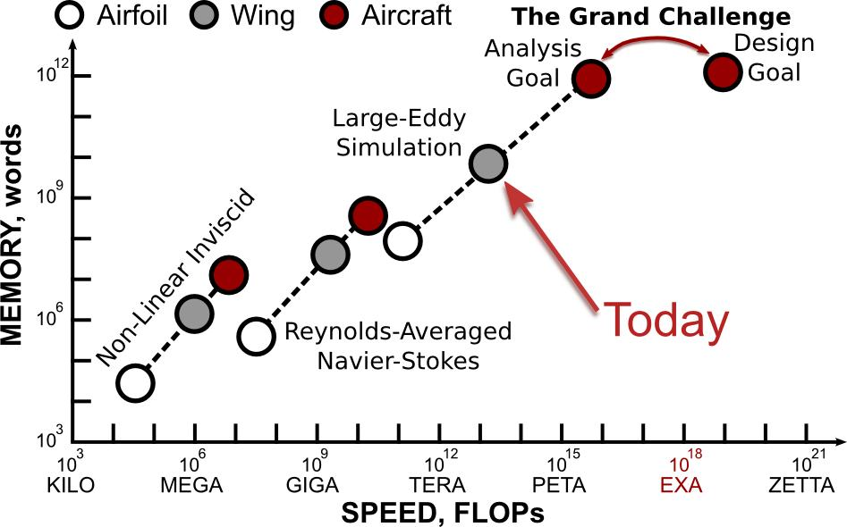
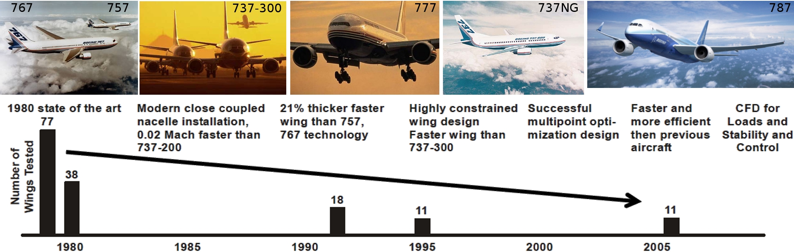

Education for the future
Morten Hjorth-Jensen [1, 2]
Anders Malthe-Sørenssen [1]
[1] Department of Physics, University of Oslo
[2] Department of Physics and Astronomy, Michigan State University, USA
September 2 2015,
How we perceive the role of education, present and future
The main topics of this talk are:
Takeaway message.
A successful research program cannot be disconnected from education and vice versa
The role of computations, from education to society
Computations of almost all systems in science are central to our
basic understanding of nature and technological advances.
Examples.
- Nanotech and Materials: quantum physical systems in nanotechnology; characteristics of new materials; semi-conductor devices and quantum computers
- The smallest particles in nature: subatomic physics at its smallest length scale
- And the largest: simulating galaxies and the evolution of the universe
- Life science: cancer treatment and how the brain works
- Geosciences: predicting climate changes and this week's weather, simulating natural disasters
- Finance: assessing risk in the insurance and financial industry
- and many many more
Modeling and computations as a way to enhance algorithminc thinking
Algorithm : A finite set of unambiguous instructions that, given some set of initial conditions, can be performed in a prescribed sequence to achieve a certain goal.
Algorithmic thinking as a way to :
- Enhance instruction based teaching
- Introduce research-based teaching from day one
- Trigger further insights in math and other disciplines
- Validation and verification of scientific results, with the possibility to emphasize ethical aspects as well. Version control is central
- Good working practices from day one
What do we mean with computing?
Computing means solving scientific problems using computers. It covers numerical as well as symbolic computing. Computing is also about developing an understanding of the scientific process by enhancing algorithmic thinking when solving problems.
And this competence is about:
- derivation, verification, and implementation of algorithms
- understanding what can go wrong with algorithms
- overview of important, known algorithms
- understanding how algorithms are used to solve complicated problems
- reproducible science and ethics
- algorithmic thinking for gaining deeper insights about scientific problems
All these elements (and many more) aid students in maturing and gaining a better understanding of the scientific process
per se.
Computing and research-based education
A computational approach allows us to introduce research concepts and engage students in research from day one.
How do we define research-based education?
It is fully integrated with a direct participation in actual research and builds upon established
knowledge and insights about scientific methods.
Research-based education
What should the education contain?
The standard situation we meet at an almost daily basis:
- Theory+experiment+simulation is almost the norm in research and industry
- To be able to model complex systems with no simple answers. Solve real problems.
- Emphasis on insight and understanding of fundamental principles and laws in the Sciences.
- Be able to visualize, present, discuss, interpret and come with a critical analysis of the results, and develop a sound ethical attitude to own and other's work.
- Enhance reasoning about the scientific method
Our education should reflect this. An example where this takes place is the
Computational Physics group at UiO. How can we implement in a systematic was a research-based education?
A particular strength of physics students is their ability to pose and
solve problems that combine physical insights with mathematical
and computational skills. This provides a unique combination
of applied and theoretical knowledge and skills. These features are invaluable
for the development of multi-disciplinary educational and research programs for future challenges.
Develop a social, scientific and learning environment
- The main aim is that students should realize their own potentials and creative power
- Students come with different dreams, ambitions, aspirations and topics they wish to study, our approach is to tailor the education to all these, an possibly more, aspects
- Our motto is to foster students which are better than their supervisors. This is how we define progress
- This creates an atmosphere for learning and sharing knowledge
- The emphasis is on learning and getting new insights. Students and teachers help each other
- No competing environment but a drive and enthusiam in sharing and developing new knowledge
- This creates an enviroment where students with different backgrounds and needs can thrive socially and scientifically
- Takeaway message: Developing a collaborative educational environment is central for multi-disciplinary research projects to succeed
Develop a social, scientific and learning environment
- The computational physics group includes bachelor, master of science and doctoral students
- Project oriented work where students develop and mature their own ideas, with an individually tailored approach to each students
- Office space with desktops to every student and large common room for recreational activities (meals, common lunches, gaming, watching movies etc etc)
- Many students collaborate on similar thesis topics and publish in top scientific journals
Developing a good learning environment
- Our students have made significant contributions to the Computing in Science Education (UiO education prize in 2011) by developing exercises and participating in educational projects at the MN faculty
- Our students have also developed educational tools and applications for understanding complicated physical problems
- The students keep shaping and developing the scientific, social and pedagogical activities of the group
- A group of PhD students is now developing new textbooks for Computational Life Science
- During the last ten years more than 60 students have finalized their master theses in computational physics and almost 60% have continued with PhD studies
- Many students don't want to leave the group after finishing their studies
Investing in equipment for students
Using research funds for visualization tools.

Building a supercomputing cluster
We got (for free) the old supercomputer at UiO (TITAN).

Undergraduate student publishes in PNAS
Using research funds for visualization tools.

The future: Multiscale modeling is the big open research question
Present and future problems, unlike traditional
science and engineering, involve complex systems with many distinct
physical processes.
- The wide open research topic of this century, both in industry and at universities, is how to effectively couple processes across different length and energy scales.
- Progress will rely on a multi-disciplinary approach and therefore the need for multi-disciplinary educational and research programs.
We need to foster candidates with the right
multi-disciplinary background and computational thinking for
understanding present and future simulation technologies and their challenges.
Examples of large scale simulations
Fluid dynamical simulations central in air industry.

Testing plane wings via massive numerical simulations
Fluid dynamical simulations central in air industry, wings tested.

The future: A new type of students
Computations (mastering and developing) will play a central role in almost all aspects of scientific investigations and technological innovation
Candidates who are capable of modeling and understanding complicated
systems, are in short supply in society.
We need students that
- can handle large and demanding multi-disciplinary projects. This requires structured thinking and good analytical skills and a thorough understanding of the problems to be solved
This knowledge makes the students unique on the labor market, a labor market which in the years to come will experience heavy automatization and massive loss of jobs.
The challenges for the future
We need to educate the next generation of
science students with the knowledge, skills, and values needed to pose
and solve current and new scientific, technological and societal
challenges.
This will lay the foundation for cross-disciplinary
educational, research and innovation activities. It will contribute to building a common cross-disciplinary
approach to key strategic initiatives, with important examples from fields like Energy research, Materials science and Life Science.
What we should do: create the Department for Computational Science
What we have and where we can arrive.
- UiO's strength in computational science (education and research) will play an important role in determining new research and educational directions
- Exploiting this strength has the potential to make UiO a center of excellence for scientific innovation
How to achieve it.
- Establish a new center/department with focus on computational science and its applications to a wide range of fields (natural science, medicine, social sciences, humanities, applied research etc)
- Hire ten (or more) young professors (age \( < 40 \)) dedicated to innovative research and education where computations play a central role
- Establish another ten professorships (or more) with shared positions (position percentage is flexible) between the new department and the department of appartanence (physics, chemistry, etc etc).
The process must start now in order not to loose momentum.
Our takeaway messages
- A successful research program cannot be disconnected from education and vice versa
- Computing plays and will play an even more important role in future scientific and technological advances
- An educational and research program which focuses on these issues needs to be established as soon as possible
- The main aim in developing a good educational and research program is that students should learn to realize their own potentials and creative power
The Computing in Science Education project, UiO educational prize in 2011
The insights, ideas and thoughts presented here, would have been impossible or difficult to gain without discussions, exchange of ideas and much more over many years with colleagues involved in the Computing in Science Education project at UiO. These dear friends and colleagues are
- Hans Petter Langtangen, Informatics and Simula Research Laboratory
- Knut Mørken, Mathematics
- Arnt Inge Vistnes, Physics
- Oyvind Ryan, Mathematics
- Solveig Kristensen and Annik Myhre, Deans of Education, MN faculty
- Hanne Sølna, Director of studies MN faculty
- And: all our fantastisc students who keep giving us new insights!
Thanks for the attention.